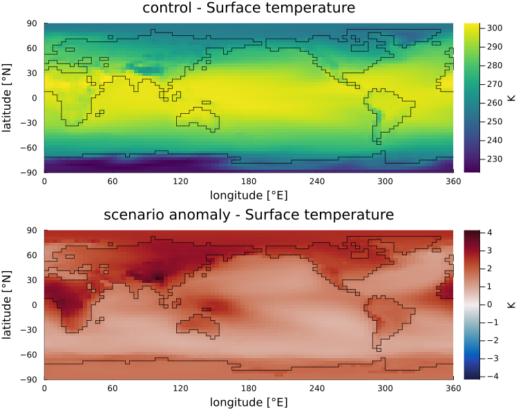
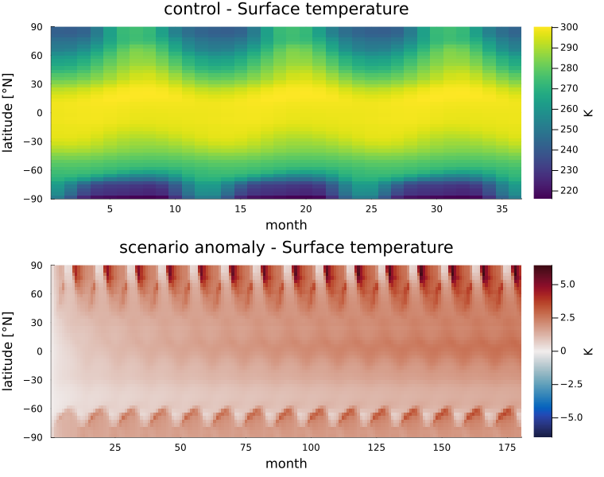
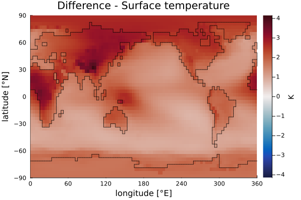

The plots
Every plot takes a greb_model! result, drawing control and scenario as separate panels, or a plain vector of monthly records. Each returns a Plots.Plot: show it, or save it with savefig.
For one run
| Function | Shows | How to read it |
|---|---|---|
plot_map | One variable over the globe, averaged over the run (month = :mean), in the last month (:last) or in month n | Where a quantity is high or low, or, for the scenario, where it changed most |
plot_timeseries | The global mean per month, or per year with annual = true; mask restricts it to a region | How fast the climate changes, and whether it has settled |
plot_seasonal | The average of each calendar month over the whole years in the run | The seasonal cycle, and for the scenario which seasons changed most |
plot_zonal | The mean over longitude against latitude | The latitude profile, e.g. polar amplification |
plot_hovmoller | The mean over longitude, as a colour against month (x) and latitude (y) | How a signal moves between latitudes and seasons, e.g. polar warming that peaks in one season each year |
evolution + evolution_frame / evolution_gif | The map month by month (or year by year) on a fixed colour scale | The map changing through the run; same colour means same value in every frame |
plot_map(result; var = :Ts, fields = fields)
plot_timeseries(result; annual = true)
plot_timeseries(result; annual = true, mask = band_mask(fields.z_topo; south = 66.5)) # Arctic
plot_seasonal(result; var = :precip)
plot_zonal(result)
plot_hovmoller(result)
ev = evolution(result; var = :Ts, step = :year)
evolution_frame(ev, 3; fields = fields)
evolution_gif("run.gif", ev; fields = fields)Figures: a 2xCO2 run of 15 years after a 3-year control. plot_map shows the control and the scenario (the change against the control):

plot_hovmoller: the warming at the poles repeats with the seasons, and the tropics warm evenly.

For several runs
| Function | Shows | How to read it |
|---|---|---|
plot_difference(a, b) | a - b of two record vectors as a map, on a scale centred at zero | Where one run differs from the other |
plot_compare(members) | The global mean of several runs as lines on one set of axes | Which run warms faster or settles higher |
plot_members(members) | One bar per ensemble member | The size of each member's effect, with baseline as a difference to one of them |
A scenario that is an anomaly has to be made absolute before it is differenced against its control:
plot_difference(to_absolute(result.scnr, result.ctrl), result.ctrl; fields = fields) # where the doubled CO2 acts
plot_difference(a.scnr, b.scnr; fields = fields) # two scenarios of one preset
plot_compare(["full model" => full, "no ice albedo" => no_ice]) # greb_model! results
plot_members(["full model" => 2.76, "no ice albedo" => 2.52]; xlabel = "warming [K]", baseline = "full model")plot_difference of the scenario against the control shows where the doubled CO2 acts:

plot_members takes plain numbers, for example the values a run_ensemble reducer returns (see examples/feedback_deconstruction.jl).
Given a greb_model! result, the plots read the year and month of each record from its ctrl_time and scnr_time, so an animation frame is titled Jul 1950. A bare record vector carries no times and is counted from January of year 1.